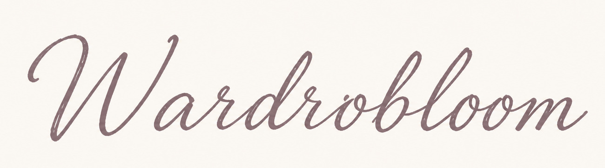
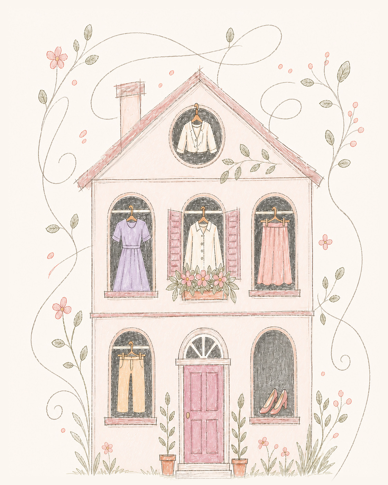

薄款、透气，早晚不用加外套
温差 7℃，组合保暖目标为 1.8—3.4。天气安全是推荐的第一层条件。


最低 23℃ / 最高 30℃
温差 7℃，组合保暖目标为 1.8—3.4。天气安全是推荐的第一层条件。
当前天气适配；薄厚度一致。米白与浅蓝清爽协调，荷叶边细节保留约会氛围。
PRIVATE INSPIRATION
单条小红书笔记 · 只分析一套主穿搭 · 仅本人可见
不模拟登录，不使用 Cookie，不绕过验证码；链接受阻会立即转为截图。
衣橱没有完全同款，使用米白上衣与浅蓝牛仔裤保留原穿搭的清爽配色和轻盈轮廓。
MY WARDROBE
DAILY OUTFITS
MY WARDROBLOOM
只显示可理解的使用次数